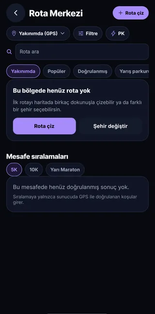
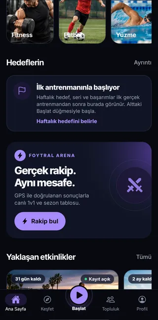
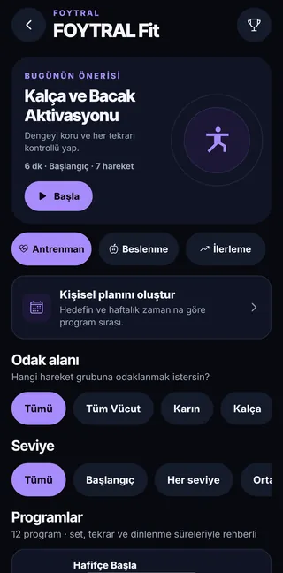
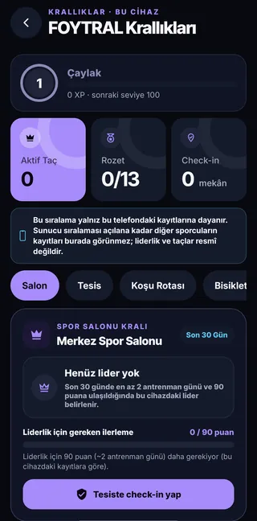
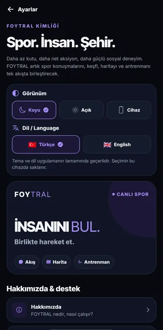

Spor haritası
Yakınındaki spor salonlarını, tesisleri ve kulüpleri haritada gör; il, ilçe ve branşa göre ara.
Spor ekosistemi · Türkiye
FOYTRAL; spor salonlarını, antrenörleri, toplulukları ve antrenman takibini tek uygulamada buluşturur.


Temel özellikler
Hangi branşta olursan ol; yer, insan ve araçlar dağınık olmamalı. FOYTRAL keşfi, antrenmanı ve topluluğu tek deneyimde birleştirir.
Yakınındaki spor salonlarını, tesisleri ve kulüpleri haritada gör; il, ilçe ve branşa göre ara.
Branşına uygun antrenörleri keşfet. Aramada yalnızca doğrulanmış ve yayınlanmış profiller listelenir.
Spor gruplarına katıl, etkinlikleri takip et ve antrenman arkadaşlarınla mesajlaş. Rahatsız edici içeriği bildirebilir, kullanıcıları engelleyebilirsin.
Koşu, yürüyüş ve bisiklet antrenmanını GPS ile kaydet; tempo, mesafe ve süreyi anlık gör. Ekran kilitliyken de kayıt sürer.
Haftalık plan, kuvvet günlüğü, beslenme, su ve adım takibi ile kişisel gelişimini tek yerde izle.
Canlı koşu · Rota Merkezi
Yakınındaki rotaları bul, kendi rotanı haritada birkaç dokunuşla çiz ve antrenmanını GPS ile kaydet.

FOYTRAL Fit
Hedefine göre kişisel plan ve set, tekrar, dinlenme süreleriyle rehberli programlar.

Krallıklar · Arena
Check-in yap, rozet kazan, tacı al. FOYTRAL Arena’da ise gerçek rakip, aynı mesafe: GPS ile doğrulanan sonuçlarla 1v1 yarış.
Uygulamanın içinden
Koyu, odaklı ve hızlı. Görüntüler uygulamanın güncel test sürümünden alınmıştır.

Kaydırarak tüm ekranları gör
Gizlilik ve güven
FOYTRAL’da neyin, kiminle, ne zaman paylaşılacağına sen karar verirsin.
Konum, harita ve antrenman kaydı için yalnızca izin verdiğinde kullanılır. Arka planda gizli konum takibi yapılmaz.
Uygulamada reklam veya analitik SDK’sı bulunmaz; verilerin reklam ağlarına satılmaz.
Gönderi ve hikâyelerinin kime görüneceğini sen seçersin; rahatsız edici içeriği bildirip kullanıcıları engelleyebilirsin.
Hesabını ve ilişkili verilerini uygulama içinden ya da hesap silme sayfasından dilediğin zaman silebilirsin.
Antrenör aramasında yalnızca doğrulanmış ve yayınlanmış profiller listelenir.
FOYTRAL, 15 yaş ve üzerindeki sporcular için tasarlanmıştır.
Android
FOYTRAL şu anda test aşamasında. Yayına çıktığında bu sayfadan doğrudan Google Play’e ulaşabileceksin.